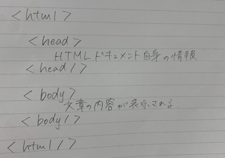

gitに関して
gitとは、分散型バージョン管理システムであり、ファイルのバージョン管理が簡単にできるツールである。
◯gitでできること
- ファイルの変更履歴が管理できる
gitを使うことで、いつ、誰が、何を変更したのかいった変更履歴を管理することができるため、
ファイル名をいちいち変更し、保存しておく必要がなくなる。
ファイルが増えないため、自分のフォルダがスッキリするといったメリットがある。
- 過去のファイルに戻すことができる
ファイルを編集していて、元に戻したいと思った時、gitを使用すれば、
変更履歴をそれぞれ管理しているため、いつでも任意の時点のファイルに戻すことができる。
- なんでも管理することができる
gitでは、プログラムのソースコードだけでなく、excelファイルや画像など、あらゆるファイルを管理することができる。
- チームで共有することができる
ネット環境を使用することで、同じチーム内の仲間とファイルの変更履歴などが共有できる。
◯gitを使う場面
・プログラミング ・Webデザイン ・Webライター など
htmlに関して
htmlとは「ハイパーテキスト・マークアップ・ランゲージ(Hyper Text Markup Language)を略した言葉であり、
マークアップ(文章構成の指示)をコンピューターが理解できる形で表した言語である。
「ハイパーテキスト」とは、「ハイパーリンクが挿入できるテキストのこと」であり、
クリックすることで別のページへ移動する仕組みになっている。
「マークアップランゲージ」とは、文章を構造化したり、文字の装飾を施したりするための機能である。
HTMLは「ハイパーテキスト」と「マークアップランゲージ」の２つの機能を合わせ持っている。
HTMLを活用することで、コンピュータは様々な情報を読み込み、人が読むのに最適なWebページを表示している。
◯HTMLの使用例
HTMLは身近なところでたくさん使われている。
その中で主流となっているのがWebページの制作である。
他にも、電子メールの文書やスマホアプリでHTMLは利用されている。
HTMLの機能により、メール内からWebページに飛べるようリンクを貼ったり、画像を表示したりすることができる。
◯HTMLの基本構造
HTMLには記述する際のルールが決められている。
まず、HTMLファイルは次のような形で記述しなければならない。

HTMLとは？初心者のためにHTML基礎知識を分かりやすく解説
HTMLとは？初心者向けにタグの種類と使い方の基本を解説！